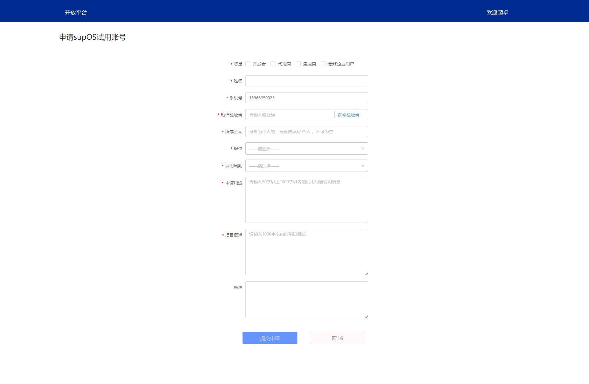
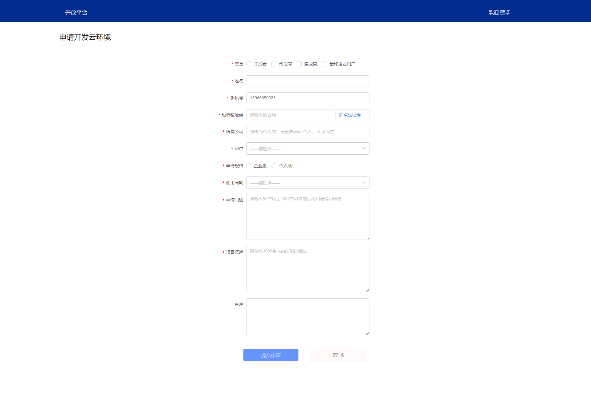

申请开发云环境
申请开发云环境
为了方便开发者使用supOS开发应用，开放平台提供如下两种方式供开发者申请线上supOS系统环境。
1. 申请前提¶
2. 申请入口¶
登录进入开发者控制台，点击“我的云资源”菜单，进入对应功能页面，点击页面右上方的申请按钮，根据当前账号信息状态跳转到不同的页面。
- 未登录状态
点击该按钮，将强制跳转到账号登录界面，如当前账号未注册，请优先注册蓝卓账号后并进行登录。 - 未进行实名认证
点击该按钮，将强制跳转到选择开发者认证类型界面，提交开发者认证审核信息，并等待审核通过。 - 实名认证审核未通过
点击该按钮，将跳转到审核结果通知页面，如仍在审核中，请耐心等待工作人员审核通过；如实名审核未通过，请查看不予通过的原因后重新提交实名认证审核资料，等待我方工作人员重新审核； - 实名认证审核通过
点击该按钮，成功跳转入信息填写页面。
3. 等待审核¶
开放平台运营人员在接收到您的申请信息后，将在1-3个工作日进行验证与环境准备工作，请您保持手机畅通，审核结果将通过短信方式告知您，届时根据短信通知内容进入对应的系统页面查看开通账号信息，包含：访问地址、登录账号、登录密码、有效期截止时间等内容。
4. 申请supOS试用账号¶
主要用于初期了解supOS系统，以及想要使用supOS系统测试APP集成与迁移，为后期正式APP对接做技术预研，期间有相关问题，可联系工作人员或者技术支持人员进行协调沟通，减少正式对接的复杂度与出错概率。
注意：
当前试用账号申请为短期临时使用，账号有效期只有一个月或者三个月的有效期，请勿使用贵公司或您个人的正式APP数据或者项目，请谨慎操作，一旦超期将删除您当前测试的数据。
资料填写
页面展示内容如下：

| 字段名称 | 填写说明 | 备注 |
|---|---|---|
| 您的身份 | 选择您代表的申请类型：开发者、代理商、集成商、最终企业用户 | 必填，可多选，根据选择的类型创建对应权限的账号 |
| 姓名 | 联系人姓名 | 必填 |
| 手机号 | 联系人手机号码 | 必填，默认绑定当前账号注册手机号码，可以变更，用于接收短信通知 |
| 短信验证码 | 点击“获取短信验证码”获取，根据短信提示操作 | 必填，验证联系人手机号的真实有效性 |
| 所属公司 | 所属公司名称 | 必填 |
| 职位 | 申请人所处公司职位 | 必填 |
| 试用周期 | 账号有效期：1个月与3个月 | 必填 |
| 申请用途 | 填写在线试用申请的使用说明 | 必填 |
| 项目概述 | 填写账号试用申请将要用于的项目信息 | 必填 |
| 备注 | 如果您有其他信息，请如实填写 | 非必填 |
| 提交申请 | 按钮操作 | 以上信息验证通过后方可点击按钮进行提交，默认不可点击状态 |
| 取消 | 按钮操作 | 返回开放平台首页 |
5. 申请在线开发云环境¶
在线开发云环境是为开发者提供的一整套属于开发者账号自己的supOS系统环境，您可以创建属于您所属团队不同权限的账号，用于APP集成与迁移。此环境不同于supOS试用账号的使用环境，对其他开发者是完全隔离的，您可以根据您申请的有效期与环境规格进行规划使用，当该套环境使用到期后，可以选择备份您的数据进行迁移至其他有效使用的supOS环境中。
注意：
请勿恶意频繁的申请开发云环境，蓝卓方将会保留您的申请记录，并监控资源的使用状态，并在对蓝卓方造成系统攻击或者资源浪费的情况下，强制回收无效的开发云环境。同时并记录恶意操作行为，影响您的开发者等级认证与评估。
资料填写
页面展示内容如下：

| 字段名称 | 填写说明 | 备注 |
|---|---|---|
| 您的身份 | 选择您代表的申请类型：开发者、代理商、集成商、最终企业用户 | 必填，可多选，根据选择的类型创建对应权限的账号 |
| 姓名 | 联系人姓名 | 必填 |
| 手机号 | 联系人手机号码 | 必填，默认绑定当前账号注册手机号码，可以变更，用于接收短信通知 |
| 短信验证码 | 点击“获取短信验证码”获取，根据短信提示操作 | 必填，验证联系人手机号的真实有效性 |
| 所属公司 | 所属公司名称 | 必填 |
| 职位 | 申请人所处公司职位 | 必填 |
| 申请规格 | 选择云环境配置规格：个人版、企业版 | 必填 |
| 试用周期 | 账号有效期：1个月与3个月 | 必填 |
| 申请用途 | 填写在线试用申请的使用说明 | 必填 |
| 项目概述 | 填写账号试用申请将要用于的项目信息 | 必填 |
| 备注 | 如果您有其他信息，请如实填写 | 非必填 |
| 提交申请 | 按钮操作 | 以上信息验证通过后方可点击按钮进行提交，默认不可点击状态 |
| 取消 | 按钮操作 | 返回开放平台首页 |